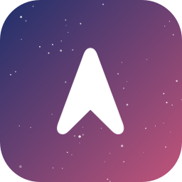

Rocket Launch Feed
Upcoming launches from Vandenberg you can see from California, how they'll look from your town, and where to watch.
Loading launches…
Coming up
Date not set yet (0)
Where to watch
Sorted by distance from you. Close-up spots are near the pad; twilight spots have a wide western or southern sky.
How the visibility rating works
For each launch with a set time, the page works out where the sun is for you and for the pad at liftoff.
- Twilight plume (great): it's dark where you are, but the sun still lights the exhaust 150 km up. This is the glowing "jellyfish" seen across Southern California and Arizona. It rates great if that height clears your horizon by 5°.
- Night: you see the engine flame as a fast orange star. Rated by how high a point 60 km above the pad sits above your horizon, allowing for Earth's curve.
- Day: only worth it within about 60 km (flame and trail), maybe up to 160 km (contrail).
It ignores clouds, fog (common at Vandenberg) and hills. Rockets from Vandenberg usually head south over the Pacific, so from Los Angeles and San Diego the plume moves from right to left as you face it, and can end up closer to you than the pad.